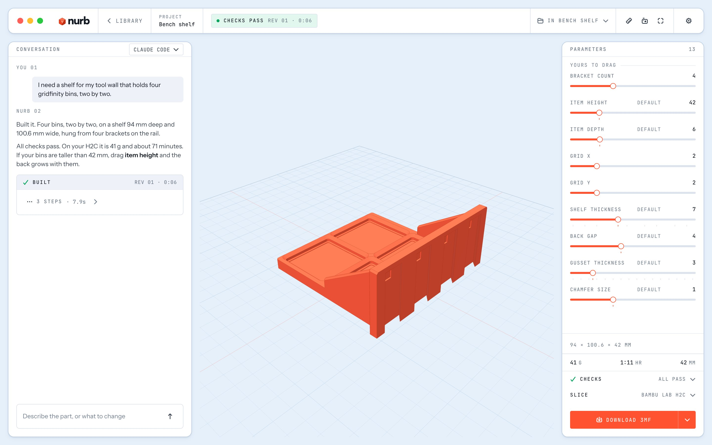

CAD for 3D printing · no CAD skills
Describe a part.
Describe a part.
Watch it build.
Print it.
Tell the AI you already use what you need. nurb models it in front of you, checks it will print, and hands you the file.
Free · Apple silicon and Intel